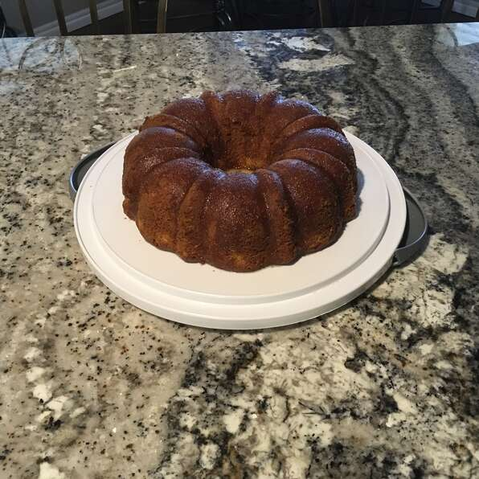

Orange Cake

Description
This is the best cake I have ever tasted. My mom gave me this recipe and I can't make it often because I would weigh 500 pounds. Hope it lasts more than a day at your house!
Ingredients
- 1 (18.25 ounce) package yellow cake mix
- 1 (3 ounce) package instant lemon pudding mix
- ¾ cup orange juice
- ½ cup vegetable oil
- 4 eggs
- 1 teaspoon lemon extract
- ⅓ cup orange juice
- ⅔ cup white sugar
- ¼ cup butter
Steps
- Grease a 10 inch Bundt pan. Preheat oven to 325 degrees F (165 degrees C).
- In a large bowl, stir together cake mix and pudding mix. Make a well in the center and pour in 3/4 cup orange juice, oil, eggs and lemon extract. Beat on low speed until blended. Scrape bowl, and beat 4 minutes on medium speed. Pour batter into prepared pan.
- Bake in preheated oven for 50 to 60 minutes. Let cool in pan for 10 minutes, then turn out onto a wire rack and cool completely.
- In a saucepan over medium heat, cook 1/3 cup orange juice, sugar and butter for two minutes. Drizzle over cake.
Go back to recipes list